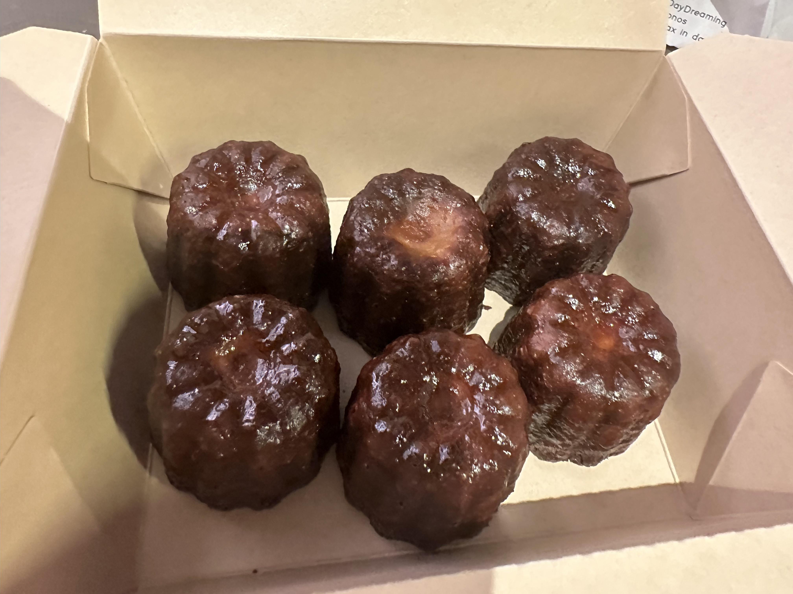

Things I Like
I want to share two things I like. I like desserts, and one of my favorite desserts is canele. I also like flowers, especially yellow flowers.
These small things make me happy in daily life.
School Life
I sometimes look at the NYU website for school information.
I am still learning web design step by step, and this website shows my progress in HTML, CSS, JQuery, user experience design, and responsive design.
Pictures

Image credit: Photo by me.

Image credit: Photo by me.